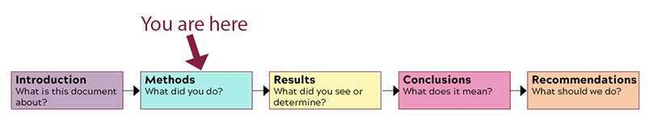

Analyze the rhetorical situation and determine the appropriate audience or users of written communication, considering the needs of global audiences and people with disabilities. [CLO 1]
Conduct research appropriate to workplace problem solving, such as literature review, evaluation of online resources, interview, and site inspection. [CLO 2]
Interpret research findings with understanding of ethical and human implications. [CLO 3]
Use conventions of various workplace genres, such as proposals, instructions, correspondence, reports, and slide decks, with understanding of how the genre conventions can be used as heuristics and as principles of arrangement. [CLO 4]
The Task

The Sections of the Body of the Recommendation Report
What I Want You to Do
Return to your work log and find all the information your recorded on researching your topic (both primary and secondary research). Using the recorded information and other notes you have, write the Methods section of your Recommendation Report.
Why I Want You to Do It
The Methods section is where you tell your readers about the research you did. This section is one of the required parts of your recommendation report. I am breaking the report out, section-by-section, to guide you through the process of writing the document and help make sure you include everything that is required for a complete report.
Where You Can Find Help
From Markel & Selber, Chapter 18:
The details on the Methods Section, from p. 479:
“The methods section answers the question “What did you do?” In drafting the methods section, consider your readers’ knowledge of the field, their perception of you, and the uniqueness of the project, as well as their reasons for reading the report and their attitudes toward the project. Provide enough information to enable readers to understand what you did and why you did it that way. If others will be using the report to duplicate your methods, include sufficient detail.”
Example Methods Section, on p. 498–501 (part of the sample recommendation report in Figure 18.8).
Open the word processor document where you are working on your recommendation report.
Scroll through the outline you created to the location for your title page.
Follow the example on p. 492 of Markel and Selber to add the text for your title page.
Format your title page similar to the example on p. 492 as well.
Review the title you have written to make sure it follows the guidelines on the Effective Report Titles page and from the textbook (See above).
Review the “Prepared for” information. Your report should be prepared for the specific person who can take action on your recommendation (e.g., some administrator on campus for a problem you are exploring on campus, some manager at a workplace, town council or a similar group in your local community). It is NOT prepared for me. I cannot make your recommendation happen.
Copy the information from your title page and paste it into text box below. You do not have to worry about the formatting here, only in the finished report.
Submit your work:
Submit here by 11:59 PM on Friday, April 16.
If you need more time, submit your document later. The assignment will close on Friday, April 30. Realize that I may not have time to provide extensive feedback on work submitted after Wednesday, April 21.
Traci will add the related points to Canvas when she marks your work Complete. Why this change? To allow everyone a longer grace period. This system will still give you the points you earn, but it gives you longer to earn them.